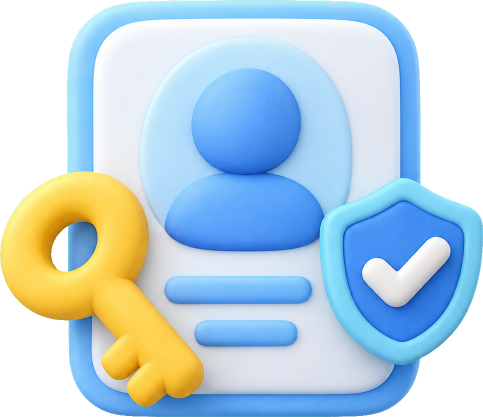
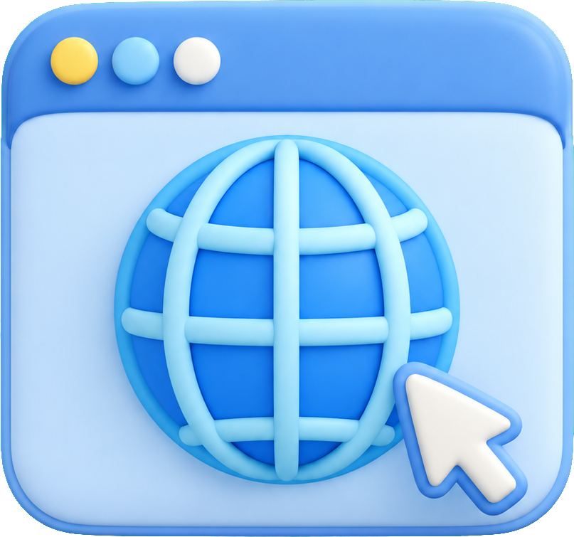
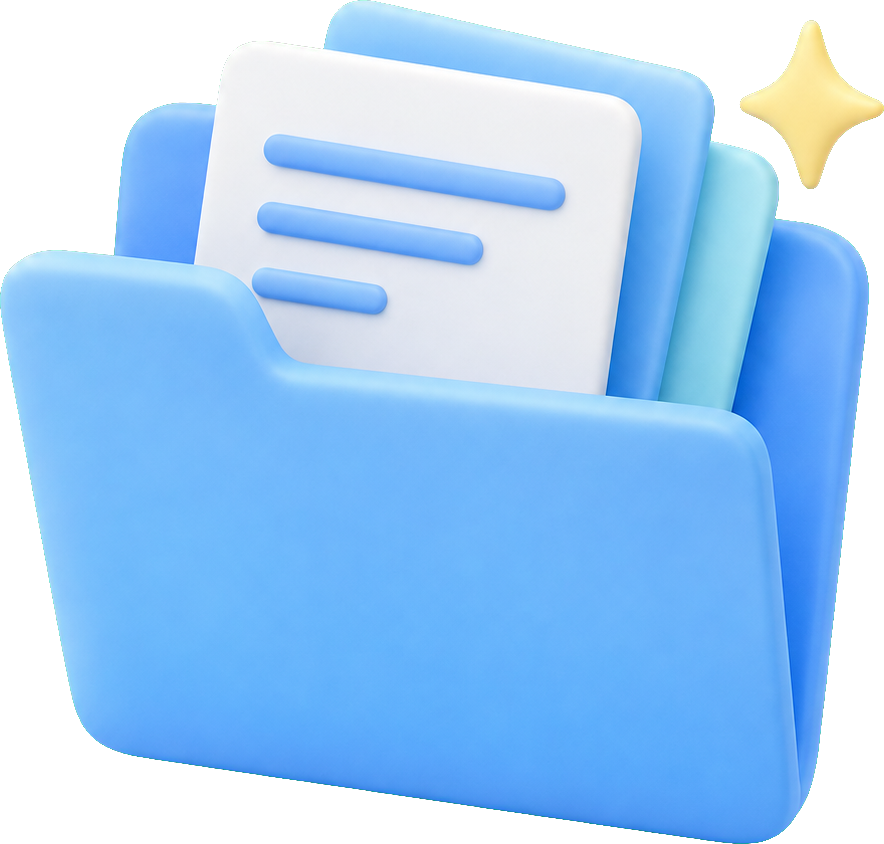
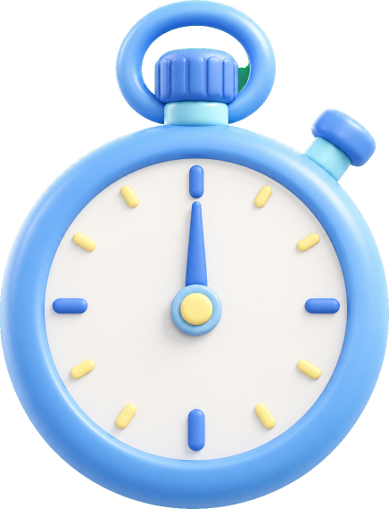
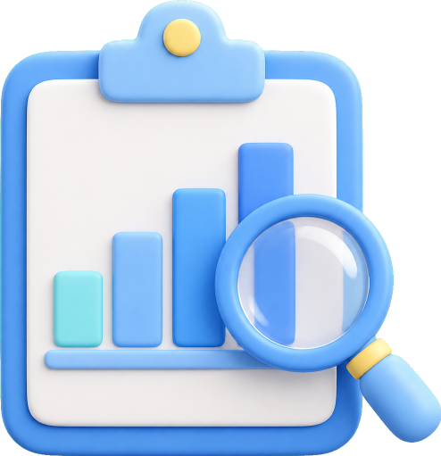
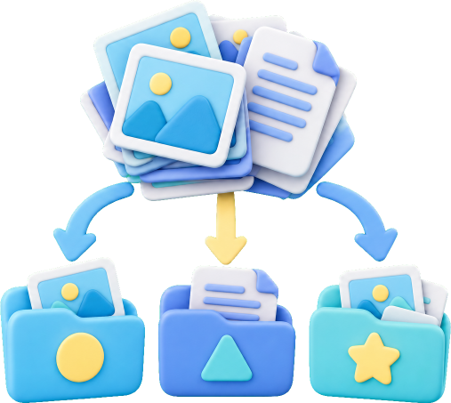
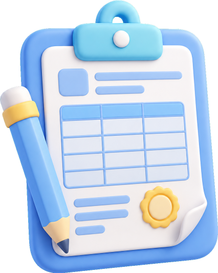

교원 대상 Codex 첫걸음
코딩을 몰라도 만드는 나만의 교육용 프로그램
오늘 할 일
프로그래밍 언어를 배우지 않습니다. Codex에게 원하는 프로그램을 우리말로 설명하고, 만들어진 프로그램을 직접 실행하면서 고쳐 나갑니다. 아래 복사 버튼을 누르면 프롬프트가 복사되니 Codex 입력창에 붙여 넣으세요.
- 자연어로 프로그램 제작을 요청할 수 있다.
- Codex가 만든 프로그램을 직접 실행할 수 있다.
- 실행 결과를 보고 수정 요청을 할 수 있다.
- 기존 프로그램에 새로운 기능을 추가할 수 있다.
- 학교 업무와 수업에 활용할 간단한 도구를 직접 만들 수 있다.
| 순서 | 시간 | 내용 |
|---|---|---|
| 1부 · Codex 이해 | 15분 | Codex란 무엇인가 · 좋은 요청 방법 · 설치 확인 |
| 2부 · 첫 프로그램 만들기 | 20분 | 실습 1. 수업용 타이머 |
| 3부 · 프로그램 발전시키기 | 20분 | 실습 2. 발표자 추첨 및 모둠 편성기 |
| 4부 · 수업 콘텐츠 만들기 | 20분 | 실습 3. 수업용 퀴즈 게임 |
| 5부 · 교사업무 자동화 | 20분 | 실습 4. CSV 설문 결과 자동 분석 |
| 6부 · 컴퓨터 업무 자동화 | 15분 | 실습 5. 학교 파일 자동 정리 |
| 7부 · 나만의 프로그램 | 10분 | 자유 실습 · 마무리 미션 |
| 심화 · 학교 업무 | 20분 | 실습 6. 학교 계획서 만들기 (한글 hwpx) |
| 심화 · 영상 만들기 | 20분 | 실습 7. 모션그래픽 학교 홍보영상 |
설치 및 실습 준비
위에서부터 순서대로 진행하세요. 1~5단계는 꼭 필요하고, 6단계는 선택입니다. 이미 끝낸 단계는 체크만 하고 넘어가면 됩니다.

ChatGPT 계정 준비하기
Codex는 ChatGPT 계정으로 로그인해서 씁니다. Plus 이상 구독이어야 원활하게 사용할 수 있습니다. 이미 ChatGPT를 쓰고 있다면 같은 계정을 그대로 씁니다.
- chatgpt.com에 접속해 로그인합니다.
- 왼쪽 아래 내 이름(프로필)을 누릅니다.
- 현재 요금제(Plus / Pro / Business 등)를 확인합니다.
- 비밀번호를 미리 확인해 둡니다.

크롬 브라우저 설치하기
Codex가 만든 HTML 프로그램(타이머, 퀴즈, 설문 분석)을 실행할 때 씁니다. 이미 설치되어 있다면 건너뜁니다. 기본 브라우저로 설정해 두면 HTML 파일을 더블클릭했을 때 바로 크롬으로 열립니다.
- 아래 링크에 접속해 [Chrome 다운로드]를 누릅니다.
- 내려받은 설치 파일을 실행합니다.
- 설치가 끝나면 크롬이 자동으로 열립니다.
Codex 데스크탑 앱 설치하기
오늘 연수는 Codex 데스크탑 앱으로 진행합니다. 폴더를 열고 대화하면 Codex가 파일을 직접 만들고 고쳐 줍니다. 앱을 설치하면 터미널용 codex 명령도 함께 설치됩니다.
- chatgpt.com/codex에 접속합니다.
- Windows용 앱 다운로드 버튼을 누릅니다. Microsoft Store로 연결될 수 있습니다.
- [설치] 또는 [받기]를 누릅니다.
- 시작 메뉴에서 Codex를 실행합니다.
Codex 앱에 로그인하기

실습 폴더 만들기
Codex는 열어 준 폴더 안에서 작업합니다. 실습마다 폴더를 나누면 결과물이 섞이지 않습니다. 한글이나 띄어쓰기가 들어간 경로는 오류가 날 수 있으니 영문 경로를 씁니다.
파일 탐색기 → 로컬 디스크(C:) → 빈 곳 우클릭 → 새로 만들기 → 폴더
C:\codex-lab ├─ 01-timer 실습 1 타이머 ├─ 02-picker 실습 2 발표자·모둠 ├─ 03-quiz 실습 3 퀴즈 ├─ 04-survey 실습 4 설문 분석 ├─ 05-files 실습 5 파일 정리 ├─ 06-mine 나만의 프로그램 ├─ 07-plan 실습 6 계획서 └─ 08-video 실습 7 홍보영상
추가로 설치하면 좋은 것
Node.js (LTS)
실습 7 홍보영상을 만들 때와, 터미널에서 Codex CLI를 npm으로 설치·업데이트할 때 필요합니다. Windows Installer(.msi)를 받아 기본값으로 설치합니다.
Node.js nodejs.orgPython
실습 5를 Python 창 프로그램으로 만들 때 필요합니다. 설치 첫 화면에서 Add python.exe to PATH를 꼭 체크합니다.
Python python.org설치 확인: 시작 메뉴에서 PowerShell을 열고 아래 명령을 한 줄씩 입력합니다. 버전 숫자가 나오면 성공입니다.
codex --version node -v python --version
Codex 앱 화면과 승인 모드
앱은 자주 업데이트되어 버튼 이름이 조금씩 바뀔 수 있습니다. 강사 화면을 기준으로 따라오세요.
왼쪽 [+ / Open project]로 폴더를 엽니다. 작업 하나에 스레드 하나를 씁니다.
Codex가 지금 무엇을 하고 있는지 실시간으로 보여 줍니다.
요청을 입력합니다. 아래에서 모델과 생각 깊이를 고릅니다.
파일 수정이나 명령 실행 전에 허락을 구합니다. 읽고 누르세요.
실습 폴더를 열고 새 스레드 시작
- 왼쪽 [+ / Open project] →
C:\codex-lab\01-timer선택 - 처음 여는 폴더는 신뢰 여부를 묻습니다. 실습 폴더이므로 Trust를 누릅니다.
- 새 스레드에서 요청합니다. 실습 하나에 스레드 하나, 주제가 바뀌면 새 스레드를 엽니다.
AGENTS.md로 기본 규칙 알려 주기
폴더에 AGENTS.md 파일을 두면 Codex가 대화를 시작할 때 먼저 읽습니다. 매번 같은 조건을 반복하지 않아도 됩니다. 시간이 부족하면 건너뛰어도 됩니다.
C:\codex-lab 폴더에 AGENTS.md 파일을 만들고 아래 내용을 넣어줘. - 사용자는 코딩을 모르는 초등학교 교사다. - 화면의 모든 글자는 한국어로, 글씨는 크고 버튼은 단순하게 만든다. - 가능하면 별도 설치 없이 HTML 파일 하나로 실행되게 만든다. - 이 폴더 밖의 파일은 만들거나 고치지 않는다. - 파일을 삭제하거나 덮어쓰기 전에는 무엇을 할지 먼저 설명하고 허락을 받는다. - 학생 개인정보는 사용하지 않고 가상 데이터만 쓴다. - 작업이 끝나면 바뀐 파일 목록과 확인 방법을 3줄로 알려준다.
Codex에게 일을 시키는 법
일반적인 ChatGPT
"수업시간에 사용할 타이머 프로그램을 만들어줘."라고 하면 프로그램 코드를 설명해 주는 경우가 많습니다. 복사, 저장, 실행은 내가 직접 해야 합니다.
Codex
같은 요청을 하면 한 단계 더 나아갑니다.
Codex를 처음 쓸 때 가장 중요한 능력은 코딩 능력이 아니라
“내가 원하는 것을 구체적으로 설명하는 능력”좋은 요청에 들어가는 4가지
수업용 타이머
초등학교 교사와 학생
5분·10분·15분 버튼, 시작·정지·초기화
교실 프로젝터에서 보기 좋도록 글자를 크게
초등학교 교실에서 사용할 수업용 타이머를 만들어줘. 5분, 10분, 15분 버튼이 있고 시작, 일시정지, 초기화 기능이 필요해. 프로젝터 화면에서도 잘 보이도록 숫자를 아주 크게 표시해줘. 처음 사용하는 교사도 쉽게 사용할 수 있도록 단순하게 만들어줘. 별도의 설치 없이 실행할 수 있도록 만들어줘.
수업용 타이머 만들기

기본 프로그램 만들기
초등학교 교실에서 사용할 수업용 타이머 프로그램을 만들어줘. 조건은 다음과 같아. - 5분 / 10분 / 15분 버튼 - 시작 버튼 - 일시정지 버튼 - 초기화 버튼 - 남은 시간을 화면 가운데 매우 크게 표시 - 시간이 1분 이하로 남으면 눈에 잘 띄도록 표시 - 시간이 끝나면 화면에 "시간 종료!" 표시 - 교실 프로젝터로 보여주기 좋은 디자인 - 별도의 설치 없이 사용할 수 있도록 HTML, CSS, JavaScript로 만들어줘. 파일을 만든 다음 직접 실행해서 오류가 없는지도 확인해줘.
실행해 보기
C:\codex-lab\01-timer\index.html을 더블클릭합니다.
"만든 프로그램을 브라우저로 열어줘."
수정 요청하기
이번에는 새로운 기능을 추가합니다.
프로그램은 잘 작동해. 그런데 교실에서 사용하기에는 조금 심심해. 다음 기능을 추가해줘. - 전체화면 버튼 - 1분 남았을 때 화면 분위기가 바뀌도록 하기 - 종료되면 간단한 알림음 재생 - 1분 / 3분 버튼 추가 기존 기능은 그대로 유지해줘.
처음부터 완벽한 프롬프트는 필요 없습니다
Codex는 이 과정을 반복하며 대화로 고쳐 가는 방식이 훨씬 효과적입니다.
발표자 추첨 및 모둠 편성기
발표자 랜덤 추첨
버튼 한 번으로 한 명을 무작위 선택
모둠 자동 편성
2명·3명·4명 단위로 랜덤 모둠
발표한 학생 제외
이미 발표한 학생은 다시 뽑히지 않게
프로그램 제작
교사가 수업시간에 사용할 수 있는 학생 발표자 추첨 프로그램을 만들어줘. 다음 기능이 필요해. 1. 학생 이름을 여러 명 입력할 수 있다. 2. '발표자 뽑기' 버튼을 누르면 학생 한 명을 무작위로 선택한다. 3. 뽑힌 학생은 크게 표시한다. 4. 이미 발표한 학생은 다시 나오지 않는 옵션이 있다. 5. '초기화' 버튼을 누르면 모든 학생이 다시 추첨 대상이 된다. 6. '모둠 만들기' 기능을 추가해서 2명, 3명, 4명 단위로 랜덤 모둠을 만들 수 있다. 초등학교 교사가 사용하기 쉽도록 버튼을 크고 단순하게 만들어줘. HTML 파일 하나만 실행하면 사용할 수 있도록 만들어줘.
테스트용 학생 입력
아래 가상 학생 12명을 복사해 프로그램 입력칸에 붙여 넣고, 발표자를 몇 번 뽑아 봅니다.
김하늘 박바다 이우리 최사랑 정미소 한누리 강새봄 윤도담 조라온 송가람 임다온 오한별
프로그램 개선 · 추첨 애니메이션
발표자를 뽑을 때 바로 이름이 나타나는 것보다 긴장감이 있었으면 좋겠어. 약 2초 동안 여러 이름이 빠르게 바뀌다가 최종 발표자가 나타나는 추첨 애니메이션을 만들어줘. 그리고 지금까지 발표한 학생을 화면 아래쪽에 표시해줘.
다시 개선하기 · 모둠 카드와 인쇄
모둠을 만들었을 때 각 모둠을 카드 형태로 보여줘. 모둠 이름은 자동으로 1모둠 2모둠 3모둠 처럼 표시해줘. 결과를 인쇄할 수 있는 버튼도 추가해줘.
수업용 퀴즈 게임 만들기
퀴즈 제작
초등학교 수업에서 사용할 객관식 퀴즈 프로그램을 만들어줘. 다음 조건으로 만들어줘. - 문제는 한 번에 하나씩 보여준다. - 보기 4개를 버튼으로 표시한다. - 학생이 답을 클릭하면 정답 여부를 즉시 알려준다. - 정답이면 간단한 축하 효과를 보여준다. - 다음 문제 버튼이 있다. - 마지막에는 맞힌 문제 수를 표시한다. 샘플 문제는 초등학교 5학년 수준의 사회 문제 5개를 넣어줘. 프로젝터에서 보기 좋게 글자를 크게 만들어줘. HTML 파일로 실행할 수 있도록 만들어줘.
문제 수정하기
프로그램의 문제 부분을 직접 찾아 고쳐 보거나 Codex에게 요청합니다.
현재 문제 중 3번 문제를 삭제하고 다음 문제로 교체해줘. "발해를 세운 사람은 누구인가?" ① 장보고 ② 대조영 ③ 김유신 ④ 왕건 정답은 ②번이야.
Ctrl + F로 문제 문장 검색 → 따옴표 안의 글자만 바꾸고 저장 → 브라우저 새로고침(F5). 따옴표와 쉼표는 지우지 않도록 주의하세요.게임 요소 추가
퀴즈를 조금 더 게임처럼 만들어줘. 다음 기능을 추가해줘. - 문제당 제한시간 20초 - 남은 시간 표시 - 연속으로 정답을 맞히면 콤보 표시 - 마지막에 100점 만점으로 점수 표시 기존 기능은 유지해줘.
새로 만들 필요가 있을까요?
아닙니다. 조금만 바꾸면 국어 단어 퀴즈, 영어 단어 퀴즈, 수학 연산 게임, 역사 퀴즈, 과학 개념 확인, 창의적 체험활동 퀴즈로 쓸 수 있습니다.
이 프로그램을 영어 단어 학습용으로 바꿔줘.
CSV 설문 결과 자동 분석 프로그램

학생 30명에게 수업 만족도 설문을 했다고 가정합니다. 각 항목은 1~5점입니다.
| 이름 | 재미있었다 | 이해가잘됐다 | 다시하고싶다 |
|---|---|---|---|
| 학생01 | 5 | 2 | 4 |
| 학생02 | 4 | 2 | 5 |
| 학생03 | 4 | 2 | 4 |
| … | … | … | … |
가상 설문 데이터 만들기
둘 중 편한 방법을 고르세요.
아래 첫 번째 프롬프트를 붙여 넣습니다.
두 번째 데이터를 복사해 메모장에 붙여 넣고 survey.csv로 저장합니다. 인코딩은 UTF-8로 합니다.
실습용 가상 설문 데이터 파일 survey.csv를 만들어줘. - 열: 이름, 재미있었다, 이해가잘됐다, 다시하고싶다 - 이름은 학생01 ~ 학생30 - 각 점수는 1~5점 사이 - '이해가잘됐다' 문항은 평균이 3점보다 조금 낮게 나오도록 만들어줘. - 엑셀에서 한글이 깨지지 않도록 UTF-8(BOM)으로 저장해줘.
이름,재미있었다,이해가잘됐다,다시하고싶다 학생01,5,2,4 학생02,4,2,5 학생03,4,2,4 학생04,5,3,4 학생05,5,3,3 학생06,4,3,4 학생07,3,2,4 학생08,5,2,5 학생09,4,3,4 학생10,5,2,4 학생11,4,4,3 학생12,4,2,4 학생13,4,3,4 학생14,5,2,3 학생15,5,3,5 학생16,5,2,5 학생17,4,3,3 학생18,4,3,4 학생19,5,2,4 학생20,4,4,4 학생21,4,3,4 학생22,4,2,4 학생23,5,3,4 학생24,5,3,4 학생25,4,4,4 학생26,4,3,3 학생27,4,4,4 학생28,5,2,3 학생29,5,2,5 학생30,5,2,4
분석 프로그램 제작
교사가 설문조사 결과를 분석할 수 있는 프로그램을 만들어줘. CSV 파일을 프로그램에 넣으면 자동으로 분석하도록 해줘. CSV에는 이름, 재미있었다, 이해가잘됐다, 다시하고싶다 열이 들어 있어. 프로그램에서는 다음을 보여줘. 1. 응답 학생 수 2. 각 문항 평균 3. 전체 평균 4. 문항별 막대그래프 5. 가장 높은 점수를 받은 문항 6. 가장 낮은 점수를 받은 문항 교사가 쉽게 이해할 수 있도록 대시보드 형태로 만들어줘. CSV 파일은 브라우저에서만 처리하고 외부 서버로 전송하지 않도록 만들어줘. HTML 파일로 실행할 수 있도록 해줘.
데이터 불러오기
만든 HTML을 실행하고 survey.csv를 선택하거나 끌어다 놓습니다.
프로그램 개선하기
분석 결과에 다음 기능을 추가해줘. - 평균 4.0 이상 문항을 별도로 표시 - 평균 3.0 미만 문항을 개선 필요 항목으로 표시 - 결과를 인쇄할 수 있는 버튼 - 모든 그래프를 보기 좋게 정리 기존 기능은 유지해줘.
비슷한 방법으로 무엇을 만들 수 있을까요?
이 분석 프로그램을 학부모 만족도 설문(열: 문항1~문항5)에 맞게 바꿔줘.
학교 파일 자동 정리 프로그램

현장체험학습 사진의 이름을 한꺼번에 바꾸고 싶습니다. 파일이 100개라면 일일이 바꾸기 어렵습니다.
IMG_1024.jpg
IMG_1025.jpg
IMG_1026.jpg
현장체험학습_002.jpg
현장체험학습_003.jpg
현장체험학습_004.jpg
연습용 파일 만들기
바탕화면에 'Codex연습' 폴더를 만들고, 그 안에 실습용 빈 파일을 만들어줘. - IMG_1023.jpg ~ IMG_1032.jpg (10개) - 가정통신문.pdf, 회의록.docx, 계획서.hwp, 발표자료.pptx, 스크린샷.png 내용은 비어 있어도 괜찮아. 다른 폴더는 건드리지 마.
프로그램 만들기
Windows에서 사용할 수 있는 파일 이름 일괄 변경 프로그램을 만들어줘. 프로그래밍을 모르는 교사가 사용하는 프로그램이야. 다음 기능이 필요해. 1. 폴더 선택 버튼 2. 변경할 파일 이름 앞부분 입력 3. 번호 시작값 입력 4. 실행 전에 변경 결과 미리보기 5. 파일 이름 변경 버튼 6. 실수했을 경우 이전 이름으로 되돌리는 기능 예를 들어 IMG_1023.jpg 를 현장체험학습_001.jpg 처럼 바꿀 수 있도록 만들어줘. 실제 파일을 변경하기 전에 반드시 사용자에게 확인을 받도록 만들어줘. 초보자가 사용하기 쉬운 화면으로 만들어줘.
개선하기 · 확장자별 자동 분류
파일 이름뿐만 아니라 확장자별로 파일을 분류하는 기능도 추가해줘. 예를 들어 jpg, png → 사진 pdf → PDF docx, hwp → 문서 pptx → 프레젠테이션 폴더로 자동 정리할 수 있도록 해줘. 단, 실제 이동을 하기 전에 어떤 파일이 어디로 이동할지 미리 보여줘.
현장체험학습_001.jpg …, 스크린샷.png
가정통신문.pdf
회의록.docx, 계획서.hwp
발표자료.pptx
학교 계획서 만들기 (한글 hwpx)

2026학년도 학생도박예방교육 계획(00초등학교).hwpx
포스터, 교수·학습 자료, 학부모 소식지, 빙고 이벤트, 챌린지 안내 등 PDF·이미지·한글 파일 8개
2026학년도 언어폭력 예방교육주간 운영 계획(00초등학교).hwpx
실습 폴더에 파일 넣기
C:\codex-lab\07-plan폴더를 만듭니다.- 강사가 나눠 준 양식 파일과 참고파일 폴더를 이 폴더에 복사합니다.
- Codex 앱에서
07-plan폴더를 열고 새 스레드를 시작합니다.
C:\codex-lab\07-plan
├─ 2026학년도 학생도박예방교육 계획(00초등학교).hwpx ← 양식
└─ 참고파일
├─ 1. 언어폭력 예방교육자료 안내 포스터.png
├─ 2. 올바른 언어 사용 관련 교수·학습 자료 및 프로그램.hwpx
├─ 3. 언어폭력 예방 학부모 소식지.pdf
├─ 4-1. 도란도란 언어폭력 예방 빙고 소풍 이벤트 포스터.pdf
├─ 4-2. 도란도란 언어폭력 예방 빙고 소풍 이벤트 카드뉴스.pdf
├─ 5. 바른말 고운말 쓰는 니가 좋아 챌린지 안내.pdf
├─ 6. 2026년 언어폭력 예방교육주간 포스터.jpg
└─ 언어폭력 예방 교육주간 운영 계획(인디용).hwp
양식 학습시키기
먼저 양식만 분석하게 합니다. 이 단계에서는 파일을 만들지 않습니다.
이 폴더의 '2026학년도 학생도박예방교육 계획(00초등학교).hwpx'는 우리 학교 계획서 양식이야. hwpx 파일 안의 구조를 분석해서 다음을 정리해줘. 아직 새 파일은 만들지 마. 1. 제목, 학교명, 대단원(Ⅰ~Ⅵ)의 순서와 제목 2. 각 단원에서 쓰는 기호와 들여쓰기 규칙(ㅇ, -, ※ 등) 3. 표의 위치와 구조(몇 행 몇 열인지, 머리행 모양) 4. 글꼴, 글자 크기, 문단 모양 같은 서식 특징
참고자료 읽고 내용 정리하기
참고파일 폴더에 있는 자료를 모두 읽고, '2026학년도 언어폭력 예방교육주간 운영 계획'에 들어갈 내용을 정리해줘. 아직 파일은 만들지 마. - 운영 기간, 대상, 주제 - 학년군별(1-2학년, 3-4학년, 5-6학년) 교육 내용 - 학생·교직원·학부모 대상 활동 - 일자별 바른 언어 실천 과제 - 관련 교육자료와 접속 경로 PDF와 이미지는 글자를 직접 읽어서 정리해줘. 읽지 못한 파일이 있으면 어떤 파일인지 알려줘.
양식 그대로 hwpx 계획서 만들기
앞에서 분석한 양식을 그대로 사용해서 '2026학년도 언어폭력 예방교육주간 운영 계획(00초등학교).hwpx' 파일을 만들어줘. - 원본 양식 파일을 복사한 다음 내용만 바꾸는 방식으로 만들고, 원본 파일은 수정하지 마. - 제목, 대단원 순서(Ⅰ~Ⅵ), 기호, 표 서식, 글꼴은 양식과 똑같이 유지해줘. - 내용은 STEP 2에서 정리한 참고자료로 채워줘. - 운영 기간은 2026. 10. 7.(수) ~ 10. 16.(금)이고, 한글날(10. 9.)을 포함해줘. - 학년군별 교육 내용 표와 일자별 실천 과제 표(날짜, 실천 과제, 알림장 문구)를 넣어줘. - 표의 행이 더 필요하면 기존 행의 서식을 그대로 복사해서 늘려줘. 완성한 다음 hwpx 파일의 압축 구조와 XML이 손상되지 않았는지 검사해줘.
한글에서 열어 확인하고 고치기
폴더에 생긴 hwpx 파일을 더블클릭해 한글로 엽니다.
한글에서 열어 보니 다음 부분을 고쳐야 해. - 일자별 실천 과제 표의 테두리와 머리행 색을 학년군별 표와 같게 맞춰줘. - 10. 9.(금) 한글날 행은 회색 음영으로 표시해줘. - 학교명은 ○○초등학교로 바꿔줘. 원본 양식의 서식은 그대로 유지해줘.
한글에서 파일을 열면 '손상된 파일'이라고 나와. 원본 양식 파일과 비교해서 원인을 찾아 고쳐줘.
다른 계획서에도 그대로 쓸 수 있습니다
양식 파일 하나와 참고자료 폴더만 있으면 성교육, 생명존중교육, 정보통신윤리교육 계획서도 같은 방법으로 만들 수 있습니다.
같은 양식으로 '2026학년도 정보통신윤리교육 계획(00초등학교).hwpx'를 만들고 싶어. 참고파일2 폴더의 자료를 읽고, 먼저 들어갈 내용을 정리해서 보여줘.
모션그래픽 학교 홍보영상 만들기
인터넷에서 학교 자료 찾고 대본 받기
○○ 부분에 소속 학교 이름과 누리집 주소를 넣습니다. 주소를 함께 알려 주면 다른 학교 자료를 가져오는 실수를 줄일 수 있습니다.
우리 학교 홍보영상을 모션그래픽으로 만들고 싶어. - 학교: ○○초등학교 - 학교 누리집: ○○○○ (주소를 붙여 넣으세요) 인터넷에서 우리 학교의 학교 소개, 교육 목표, 교훈, 특색 교육활동, 주소를 찾아서 정리해줘. 그다음 30초짜리 홍보영상 대본을 장면 6개 정도로 나누어 보여줘. 각 장면마다 화면에 나올 글자와 움직임을 적어줘. 자료를 어디서 가져왔는지 출처도 함께 알려줘. 아직 영상은 만들지 마.
학교소개.txt로 저장해 폴더에 넣고 "학교소개.txt를 읽고 대본을 써줘"라고 요청합니다.모션그래픽 영상 만들기
좋아. 그 대본으로 30초 길이의 학교 홍보 모션그래픽 영상을 만들어줘. - 화면 크기 1920×1080, 30fps, MP4 파일 - Remotion으로 만들어줘. - 장면마다 글자가 부드럽게 나타나고, 도형과 아이콘이 움직이는 모션그래픽 효과를 넣어줘. - 밝고 따뜻한 색감, 교실 TV에서도 잘 보이는 큰 글씨 - 학생 얼굴이 나오는 사진은 쓰지 마. - 마지막 장면에는 학교 이름과 누리집 주소를 보여줘. 완성되면 out 폴더에 MP4로 렌더링하고, 미리보기 방법도 알려줘.
보고 고치기
영상을 보고 다음을 고쳐줘. - 2번 장면 글자가 너무 빨리 사라져. 1초 더 보여줘. - 첫 장면에 학교 이름이 더 크게, 튀어 오르듯 나타나게 해줘. - 장면이 바뀔 때 부드럽게 밀려나는 전환 효과를 넣어줘. - 배경음악 자리를 만들어 두고, 내가 music.mp3를 폴더에 넣으면 들어가게 해줘. 나머지는 그대로 두고, 다시 MP4로 렌더링해줘.
자료 폴더를 만들어 내 사진과 자료로 만들기
인터넷 자료만으로는 원하는 장면이 나오지 않을 수 있습니다. 폴더를 하나 만들고, 쓰고 싶은 자료와 사진을 함께 넣으면 Codex가 그 자료로 훨씬 정교한 영상을 만듭니다.
C:\codex-lab\08-video\자료 ├─ 학교전경.jpg (얼굴이 나오지 않는 사진) ├─ 운동회_뒷모습.jpg ├─ 도서관.jpg ├─ 학교로고.png ├─ 학교소개.txt (교훈, 교육 목표, 특색 활동) └─ 원하는문구.txt (영상에 꼭 넣고 싶은 문장)
자료 폴더에 있는 사진과 문서만 사용해서 우리 학교 홍보 모션그래픽 영상을 다시 만들어줘. - 학교소개.txt와 원하는문구.txt를 읽고 장면 대본을 먼저 보여줘. - 사진은 파일 이름을 보고 어울리는 장면에 배치하고, 천천히 확대되는 효과를 넣어줘. - 학교로고.png는 첫 장면과 마지막 장면에 넣어줘. - 길이는 40초, 1920×1080, MP4로 렌더링해줘. 대본을 내가 확인한 다음에 영상을 만들어줘.
IMG_0412.jpg보다 운동회_뒷모습.jpg처럼 이름을 붙이면 Codex가 장면에 맞는 사진을 더 잘 고릅니다.나만의 프로그램 만들기
먼저 기능을 제안받기
○○ 부분을 내 상황에 맞게 바꿔서 보냅니다.
나는 초등학교 교사야. ○○ 업무를 자주 하는데 이 과정에서 ○○하는 것이 번거로워. 이 일을 쉽게 할 수 있는 프로그램을 만들고 싶어. 우선 프로그램을 만들기 전에 어떤 프로그램을 만들면 좋을지 기능을 제안해줘.
제안을 확인한 다음 만들기
좋아. 그 기능으로 프로그램을 만들어줘.
마음에 드는 기능만 고르고 싶다면 "1, 3, 4번 기능으로 만들어줘"처럼 요청해도 됩니다.
일곱 가지 실습 돌아보기
| 실습 | 핵심 경험 | 난이도 |
|---|---|---|
| 1 · 수업용 타이머 | 프로그램 처음 만들기 | ★☆☆☆☆ |
| 2 · 발표자·모둠 편성기 | 데이터와 기능 추가 | ★★☆☆☆ |
| 3 · 수업용 퀴즈 | 기존 프로그램 확장 | ★★☆☆☆ |
| 4 · 설문 분석 대시보드 | 데이터 분석 자동화 | ★★★☆☆ |
| 5 · 파일 자동 정리 | 실제 업무 자동화 | ★★★★☆ |
| 6 · 계획서 만들기 | 양식 학습과 한글 문서 자동 작성 | ★★★☆☆ |
| 7 · 학교 홍보영상 | 인터넷 자료로 모션그래픽 영상 제작 | ★★★★☆ |
Codex에게 수정 요청하는 6가지 표현
어떤 프로그램에도 그대로 쓸 수 있습니다. ○○ 부분만 바꾸세요.
기존 기능은 유지하고 ○○ 기능을 추가해줘.
○○ 버튼을 눌렀는데 작동하지 않아. 원인을 찾아서 수정해줘.
기능은 좋은데 화면이 복잡해. 초등학교 교사가 사용하기 쉽게 다시 디자인해줘.
사용자가 처음 보더라도 설명 없이 사용할 수 있도록 개선해줘.
현재 프로그램 전체를 점검해서 오류가 발생할 가능성이 있는 부분을 찾아 수정해줘.
이 프로그램을 학교 현장에서 더 유용하게 사용할 수 있도록 추가하면 좋은 기능 5가지를 먼저 제안해줘. 아직 수정하지는 마.
초보자가 꼭 기억해야 할 프롬프트
프로그램이 어느 정도 완성되었다면 마지막에 꼭 이 프롬프트로 전체 점검을 요청하세요. 메모장에 저장해 두고 쓰면 편합니다.
지금까지 만든 프로그램을 전체적으로 점검해줘. 1. 실행 오류 2. 버튼 동작 오류 3. 예상하지 못한 입력 4. 초보 사용자가 헷갈릴 부분 5. 데이터가 사라질 가능성 을 확인하고 문제가 있다면 수정해줘. 수정 후 프로그램이 정상 작동하는지도 다시 확인해줘.
교원이 꼭 지켜야 할 세 가지
이럴 땐 이렇게
| 상황 | 해결 방법 |
|---|---|
| 폴더가 안 열리거나 Trust 오류 | 경로에 한글·띄어쓰기가 없는지 확인합니다(C:\codex-lab 권장). 그다음 앱을 다시 시작합니다. |
| 승인 카드가 너무 자주 떠요 | 정상입니다. 읽고 승인하는 편이 안전합니다. |
| 'Reconnecting…' 반복 후 실패 | 여러 작업을 동시에 돌리지 말고 하나씩 합니다. 1분 쉬고 다시 시도합니다. |
| 만든 파일이 어디 있는지 몰라요 | "만든 파일 위치를 알려주고 탐색기로 열어줘." |
| 버튼이 작동하지 않아요 | "○○ 버튼을 눌렀는데 작동하지 않아. 원인을 찾아서 수정해줘." |
| 엑셀에서 CSV 한글이 깨져요 | "CSV를 UTF-8(BOM)으로 저장하도록 바꿔줘." |
“코드를 직접 작성하는 것이 아니라, 원하는 결과를 설명하고 결과를 확인하면서 AI와 함께 프로그램을 완성한다.”
Codex 시대에 필요한 것은 모든 교사가 프로그래머가 되는 것이 아닙니다. 교사가 자신에게 필요한 도구를 스스로 만들어 사용할 수 있게 되는 것입니다.